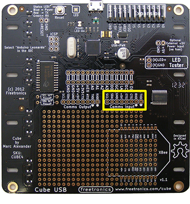
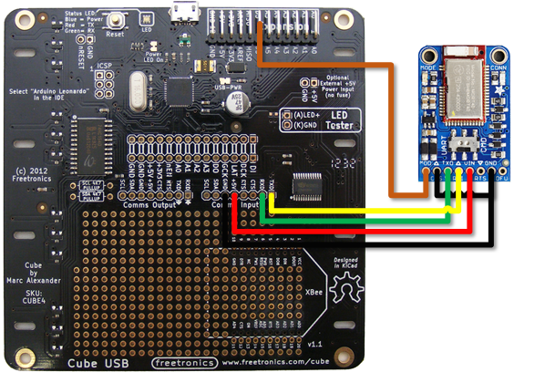

Wiring
Parts List
The following list includes all of the parts I've used in creating the BlueCube.
Please note that the code is specifically written to support the Adafruit Bluetooth module. Other Bluetooth modules will not work without modification to both the sketch for the cube, and to the apps for iOS and Android.
- Freetronics 4x4x4 RGB LED Cube
- Adafruit Bluefruit LE UART Friend - Bluetooth Low Energy (BLE)
- 1x8 Pin 0.1" (2.54 mm) Right-Angle Breakaway Male Header
- Tiny Breadboard
- 5 x Dupont Jumper Leads (Male to Female - 3 x 10cm and 2 x 20cm)
- 1 x Dupont Jumper Lead (Male to Male - 1 x 10cm)
The header pins, breadboard, and jumper leads can all be found on eBay or from your nearest hobby electronics store. These are optional however as you can also use the prototyping section of the cube PCB.
Assembly
I strongly suggest that you follow the Freetronic instructions on creating the cube that are available here.
I decided when making my cube that I did not want to permanently attach the Bluetooth module. To this end, I added a step to the end of "Step 4 - Fit Controller Board Standoffs" of the above assemble instructions.
I affixed the 1x8 Pin Right-Angle breakaway male headers to the PCB as outlined below, so that the pins were on the "underside" (the side with all of the components) in the area marked in yellow.

The rest of the assembly was completed as outlined on the Freetronics site.
For the Adafruit Bluefruit LE UART Friend module, I soldered the 1x8 Male Header Pins in, so that they extended from the back of the module.
Connections
To connect the Bluetooth module to the cube, I use a small breadboard, and 6 Dupoint style jumper leads (3 x 10cm Male to Female, 1 x 10cm Male to Male, and 2 x 20cm Male to Female). The Bluetooth module is placed in the breadboard, and then wires are connected as outlined below.

With the wiring as show above, the following connections were made:-
| Cube | Bluetooth Module |
|---|---|
D5 |
MOD |
GND |
CTS and GND |
RX |
TX |
TX |
RX |
+5v |
VIN |
RTS and DFU on the Bluetooth Module are not connected. The switch on the Bluetooth module is set to the "CMD" possition.